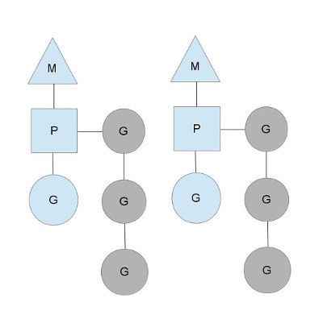
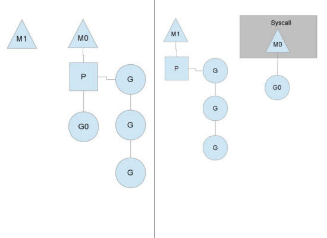

Go语言学习笔记 -- 第18章 Go并发调度
本章主要描述go语言在并发启用goroutine时，go调度器的运行机制
一、其他语言现有并发方式（需要后续查阅补充）
复杂 : >> 1.创建容易退出难， >> 2.并发通信麻烦，多种机制可选，但一旦是shared memory方式，则设计各种锁机制 >> 3.线程堆大小设置，是默认大小还是稍大或稍小，不容易判断
难于扩展： >>1.线程切换仍然是走cpu内核调度，涉及上下文切换 >>2.由于客观限制，不能大量创建线程，尤其对于网络应用，所以需要对少量线程精细的使用，复杂度高
二、Goroutine调度器
最重要的区别： Go协程上下文切换，是由goroutine scheduler （goroutine调度器）通过一定的算法将goroutine中需要执行的代码放在CPU中进行执行
分析如下： 对于操作系统而言，它只有关注系统线程。 对Go而言，goroutine的调度全要靠Go自己完成，Go程序内goroutine之间竞争CPU资源，这个任务就落到了Go runtime头上
将goroutines按照一定算法放到不同的操作系统线程中去执行。这种在语言层面自带调度器的，我们称之为原生支持并发。
三、三个主要点：
G P M 线程只负责执行，不在负责状态，这是并发任务跨线程调度，实现多路复用的精髓。 G：goroutine，简称G。进程内一切都是以goroutine方式运行，包括运行时相关服务以及main.main入口函数，G仅仅用来保存并发任务状态，为任务执行提供所需栈内存空间（G初始栈只有2KB）
P：Processor 简称P。起作用相当于CPU核，用来控制可同时并发数量。每个线程（M）必须绑定一个有效P才能被允许执行任务。
M：实际执行体，以调度循环方式不停执行G并发任务。M通过修改寄存器将执行栈指向G自带的栈内存，并在此空间内分配堆栈帧，并执行任务。当需要中途切换的时候，只要将相关寄存器值保存回G即可， 任意M都可以执行恢复操作
具体层次关系如下：

四、调度方式：
1.正常情况：
正常情况下，一个M对应一个P，P之下有G的队列，某一时刻某一个M通过P执行队列中的一个G。同时还有一个全局的G的队列。具体使用情况后面描述

tips：P决定整整的并发度，即正在运行的goroutine个数有多少，可以通过runtime.GOMACPROCS()（go1.6版本默认是cpu支持线程数）
2.阻塞情况： 当某一个G进入系统调用阻塞后，P带着其余G转入其他空闲M或新创建一个M后转入，阻塞中的M0->G0继续执行。当执行返回后，则M0会从其他M那里取到一个P过来然后将G0放入该P队列中执行，如果没有空闲P，M则会将该G0放入global runqueue中，然后自己睡眠。 同时所有P也会周期性的去扫描global reunqueue，并将其中的G拿出运行 
3.work stealing
当某个P所分配的任务G很快就执行完了，这时空闲后，其他的P还有任务，同时此时global runqueue正好没有没有G了，那么这个P会从其他P里拿一些G来执行。steal的规则是拿的时候会拿其他P runqueue中的一半，这样保证每个OS线程都能充分使用

五、题外补充 同步 异步 阻塞 非阻塞
- 同步：发出一个调用，在没有得到结果之前，该调用就不返回。一旦调用返回，就得到返回值了。
- 异步：发出一个调用后，这个调用结果就直接返回了，但是调用者不会立即得到结果，只有当被调用者通过状态或通知等方式告诉调用者后，调用者才能知道结果。
- 阻塞：程序等待调用结果，在返回之前，当前线程会被挂起。调用线程只有在得到结果之后才会继续执行。
- 非阻塞：程序不等待调用结果，当前线程继续执行下去。
同步与异步主要关注的是消息通信机制 阻塞与非阻塞主要关注的是程序处理机制 注意！！！ 阻塞与非阻塞与是否同步和是否异步无关。
>>参考资料
>>1.《go语言学习笔记》
>>2. https://tonybai.com/2017/06/23/an-intro-about-goroutine-scheduler/